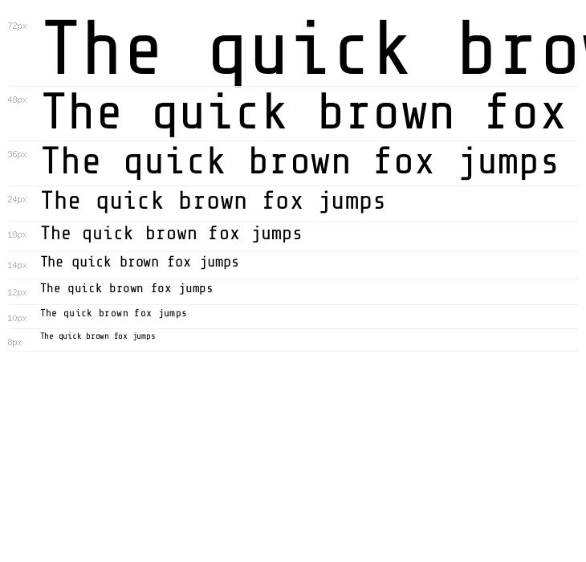
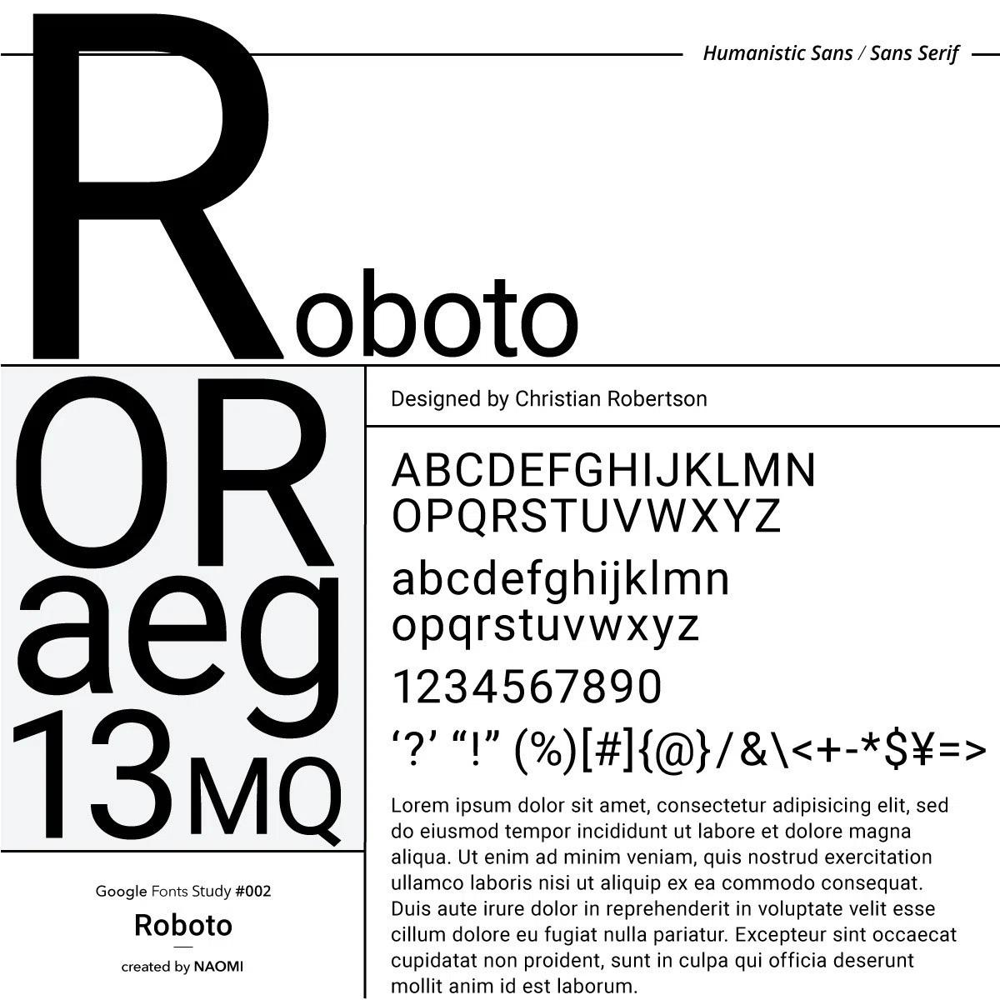
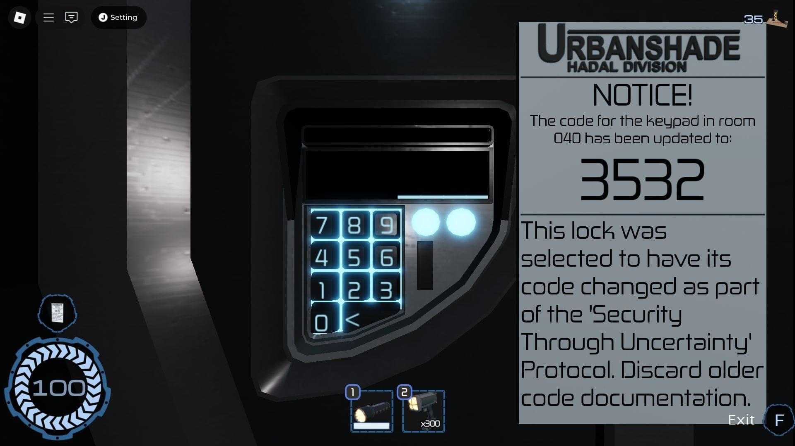

Fontes

Share Tech Mono
- Estilo terminal e computador
- Fonte monoespaçada, em que todas as letras ocupam a mesma largura. Combina com códigos, relatórios e registros secretos. Exemplo: LOG_ID: 008 / STATUS: ACTIVE
Roboto

- Estilo moderno e legível
- Uma fonte simples e versátil, utilizada em interfaces digitais. Boa para parágrafos e textos informativos. Exemplo: Registro de informações da instalação submarina.

Rajdhani
- Estilo tecnológico
- Fonte com letras estreitas e modernas, ideal para títulos de sistemas, arquivos e interfaces futuristas. Exemplo: HADAL BLACKSITE — SYSTEM ONLINE